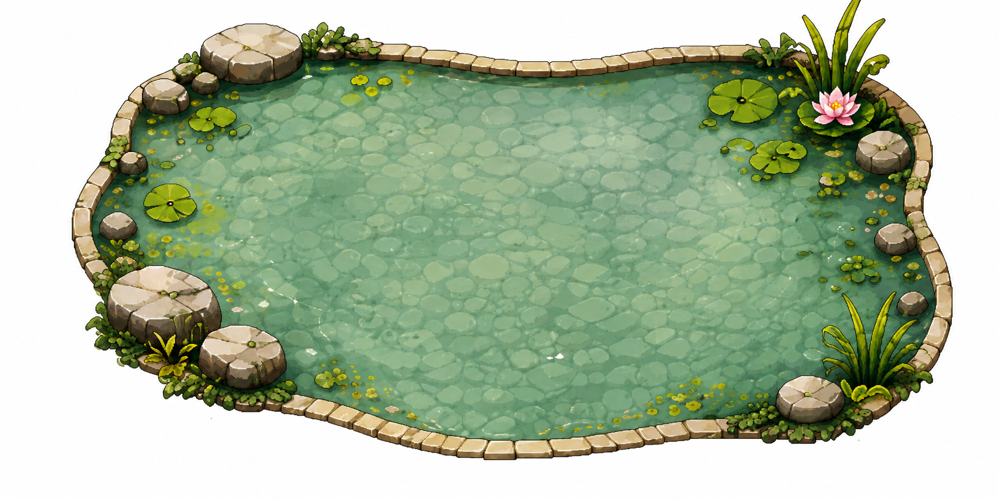
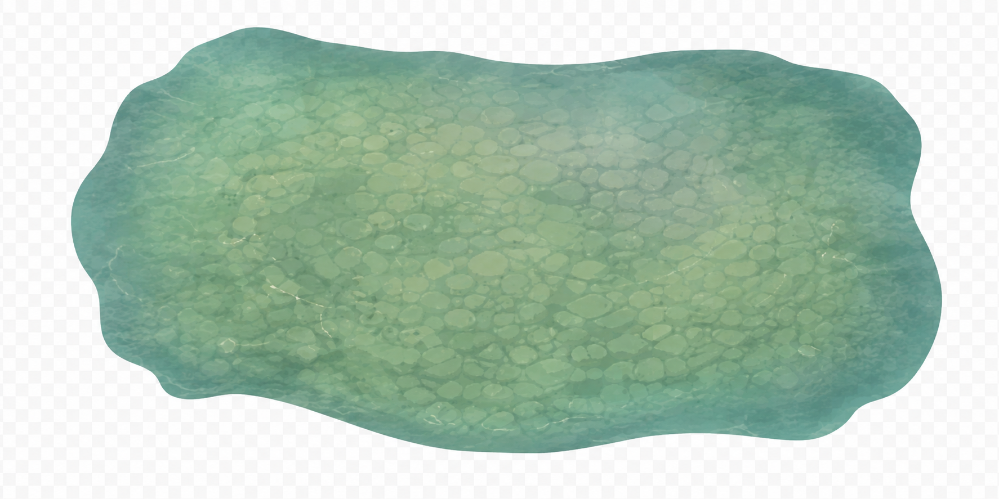
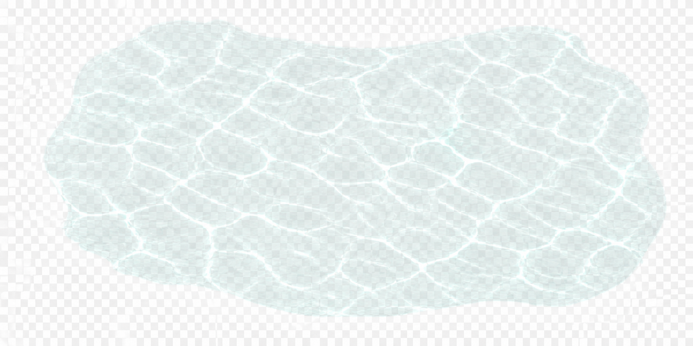
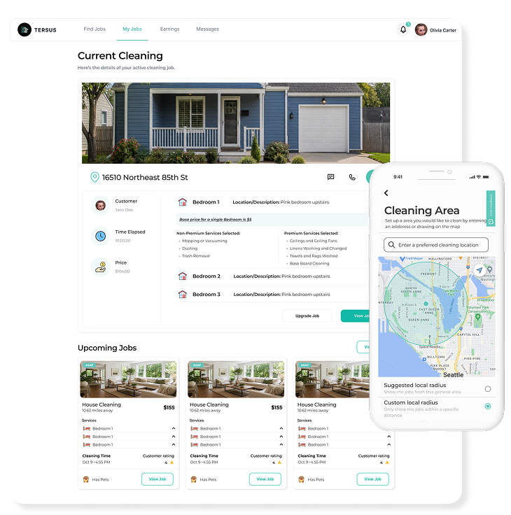
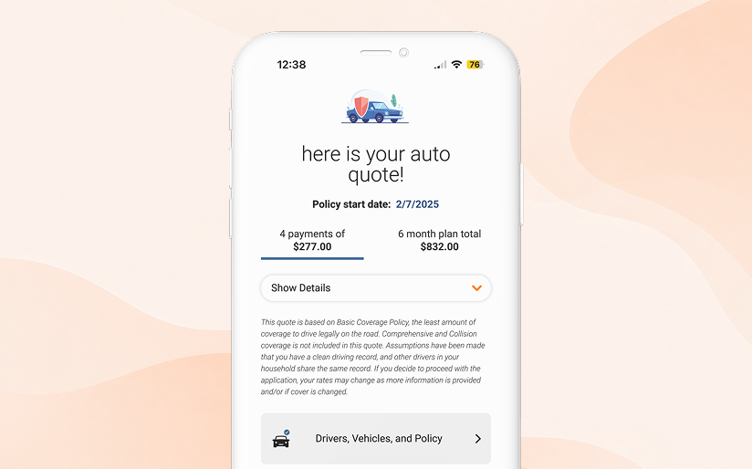
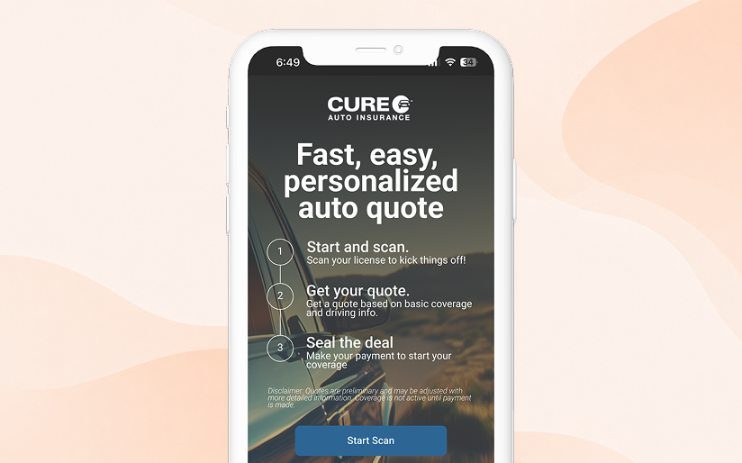
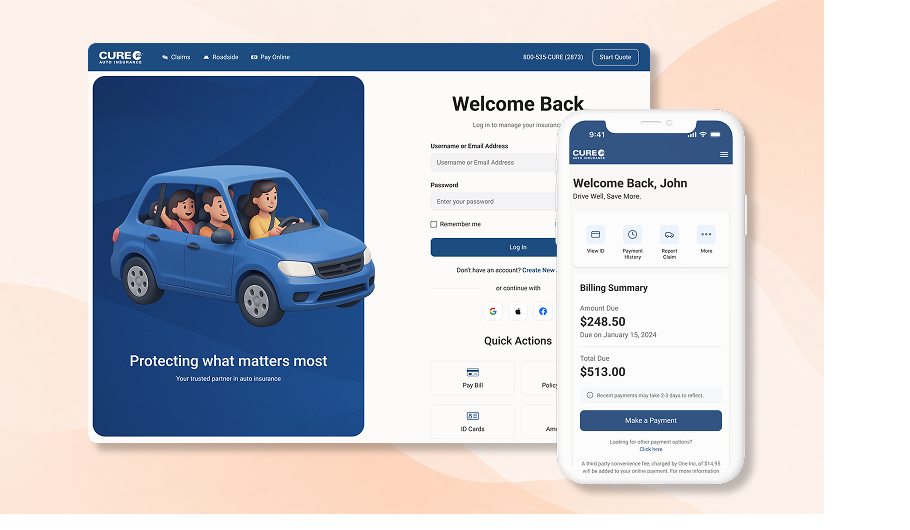
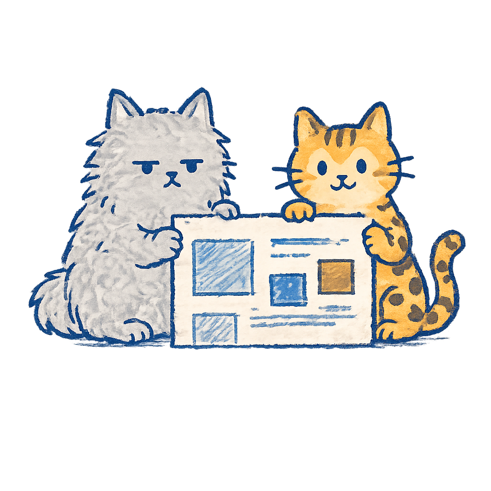

UX/UI & PRODUCT DESIGN
Andy
Nguyen.
I design clear, polished digital experiences for complex product problems.
Human-centered. Detail-obsessed. Playful by nature.
Scroll to explore



Click to feed the koiSmall interactions matter.
Selected work below ↓
Recently Made.
04 CASE STUDIES-
01
Tersus
Designing a simpler marketplace for home cleaning services — clearer booking flows and end-to-end product design that reduced friction for both customers and cleaners.
View case study
-
02
Quick Quote
Redesigned CURE Auto Insurance's quote experience to reduce friction, improve form clarity, and help customers move through signup with more confidence.
View case study
-
A mobile-first quote experience that reduced manual entry by pre-filling customer details from a scanned driver's license — designed from zero to one.
View case study
-
Redesigned CURE's account portal so customers can access policy details, manage account tasks, and navigate important insurance information with less confusion.
View case study
More Projects.
GRAPHIC DESIGN · MOTION · ILLUSTRATIONABOUT ANDY
A product designer with 3 years of experience partnering with founders and cross-functional teams.
My approach blends research, clarity, and craft to design experiences that are useful, usable, and a little delightful.
- Research
- UX Strategy
- Interaction Design
- UI Design
- Prototyping
- Visual Craft

Have a complicated product problem?
Let's make it feel simple.
I'm always open to new opportunities and interesting problems. Whether you have a project in mind or just want to say hello, I'd love to hear from you.